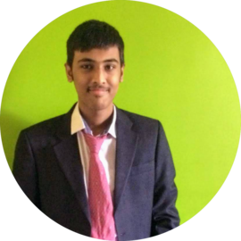

About Me

Hi,I am Anwesh Shaw. I am 19 years old and pursuing my Bachelors in CSE at SRMIST Chennai.
I hail from Nashik, Maharashtra.
I adore programming and love taking on new challenges. My deep love for coding and interest in new technologies
led me to choose CSE as my field of study and career.
I am proficient in C, C++, and Python. I have worked with many Python libraries and applied this knowledge to make
projects and am still exploring new libraries.
I am a Front-End Web-Developer. I know how to deploy Django and Flask frameworks.
Currently, I am learning backend Web-Development and aim to be a Full Stack Web-Developer.
I also have a basic knowledge of Java. I have worked with SQL and have a basic knowledge of Linux
Command Line Interface(CLI).
In the near future, I aim to learn about Javascript and the MERN stack.
I wish to explore new frameworks and the field of App Development.
I am keen in gaining more knowledge and try my level best to be better everyday.
I look forward to collaborate with people on Github and would love to work on Open-Source Projects
and gain a lot of experience and learn from everyone.